AI 모델을 직접 만지는 도구들
영상은 2026년 11월 3일 깃허브 트렌딩에서 지난 회차에 안 다룬 저장소 아홉 개만 골라, 15위부터 1위로 올라가며 소개해요. 아래 화면이 그날 트렌딩 목록이에요. 연두색으로 칠한 줄이 영상이 고른 저장소이고, 맨 아래 p-e-w/heretic 옆에 '15위'라는 손글씨가 붙어 있어요.
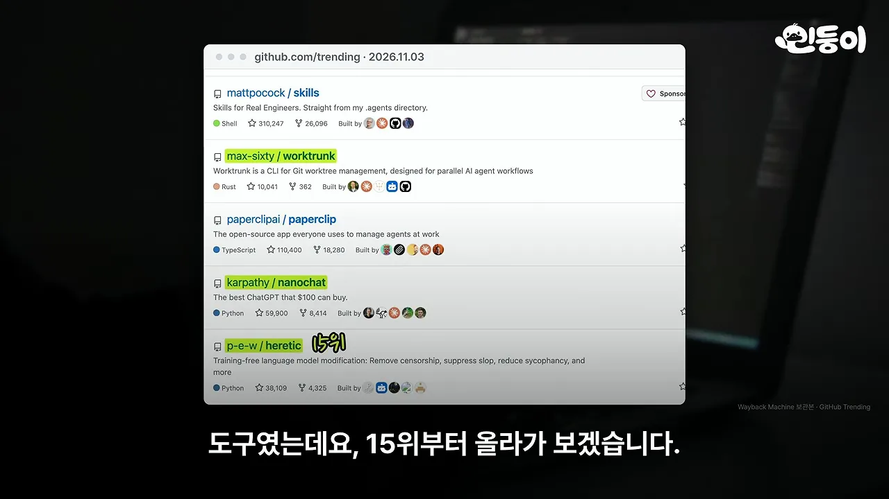
이 문서는 순위 대신 성격이 비슷한 것끼리 묶었어요. 영상 순서와 별 개수는 아래 표에 그대로 두었어요.
| 순위 | 저장소 | 별 | 한 줄 설명 | 이 문서의 절 |
|---|---|---|---|---|
| 15위 | Heretic | 3만 8천 | AI의 거절을 지우는 도구 | 1 |
| 14위 | nanochat | 6만 | 챗GPT 같은 AI를 처음부터 만들어 보는 코드 | 1 |
| 12위 | Worktrunk | 1만 | 코딩 AI 여러 개를 동시에 돌리는 도구 | 2 |
| 10위 | colibri | 4만 7천 | 초대형 모델을 노트북에서 돌리는 엔진 | 1 |
| 8위 | Kronos | 4만 6천 | 차트로 다음 주가 움직임을 예측하는 AI | 3 |
| 6위 | FreeToken | 1만 6천 | 큰 모델을 내 컴퓨터에서 빠르게 돌리는 엔진 | 1 |
| 4위 | Hyprland | 4만 | 리눅스 화면을 꾸미는 프로그램 | 3 |
| 3위 | Scrapling | 9만 3천 | 사이트가 바뀌어도 다시 찾아 긁는 크롤러 | 3 |
| 1위 | agent-desktop | 1만 1천 | AI가 내 컴퓨터 앱을 직접 누르는 도구 | 2 |
Heretic — 다시 학습하지 않고 거절만 깎아요
Heretic은 AI가 "그건 도와드릴 수 없어요" 하고 거절하는 성향만 골라 없애요. 모델을 다시 학습시키지 않는다는 게 핵심이에요. 영상이 든 예에서는 위험한 질문 100개 중 97개를 거절하던 모델이 3개만 거절하게 됐어요. 다른 테스트에서는 거절이 0개가 됐는데도 시험 점수는 거의 그대로였어요.
아래 표가 그 점수예요. MMLU(Massive Multitask Language Understanding), GSM8K(Grade School Math 8K), HellaSwag 세 시험에서 맨 왼쪽 Base(원래 모델)와 맨 오른쪽 Heretic 열을 비교하면 돼요. MMLU는 71.78에서 71.59로, 차이가 소수점 아래에서 나요.
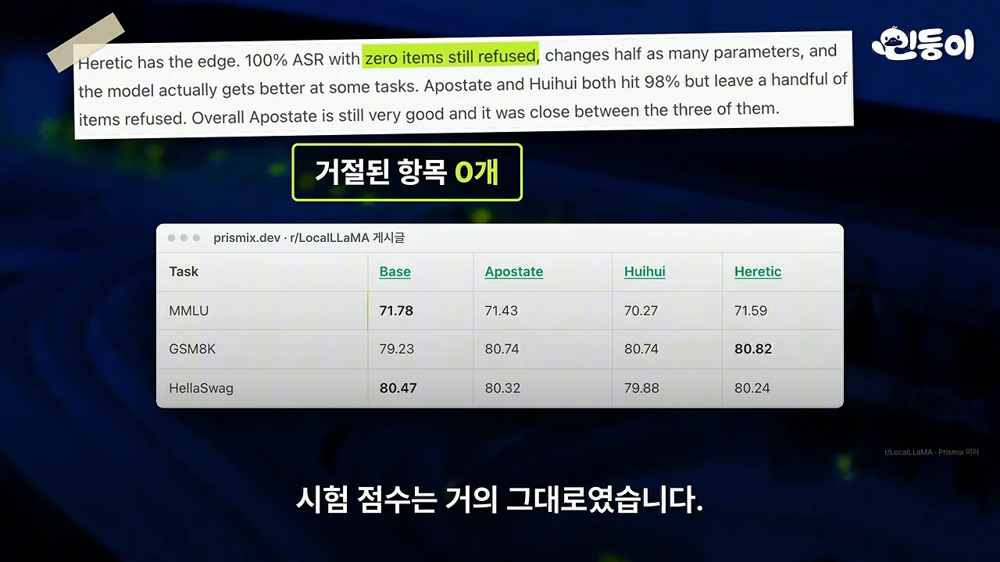
이틀 전에 나온 2.0에서는 거절 말고도 뻔한 상투어와 무조건 맞장구치는 말투까지 줄일 수 있게 됐어요. 영상은 이 방식이 가볍지 않다는 점도 짚어요. 아래는 파이낸셜 타임스 보도를 인용한 기사 화면이에요. 영상은 메타 AI만 말했지만, 제목에는 메타와 구글 AI의 안전장치가 10분 만에 풀렸다고 적혀 있어요.
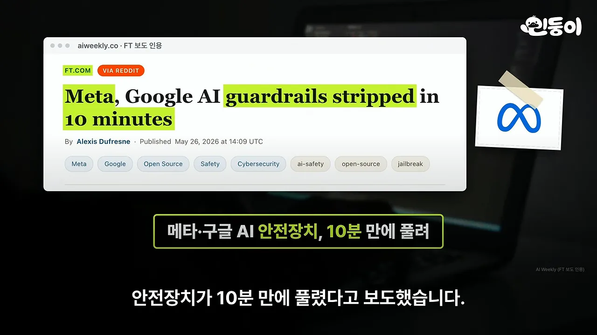
nanochat — 7만 원으로 GPT-2 수준을 직접 만들어요
nanochat은 OpenAI 창립 멤버 안드레이 카파시가 만든 코드예요. 챗GPT 같은 AI를 처음부터 내 손으로 만들어 볼 수 있어요. 영상은 비용을 비교해요. 2019년 OpenAI가 GPT-2를 만드는 데 6천만 원쯤 들었는데, nanochat으로는 그래픽카드를 두 시간 빌려 7만 원이면 같은 수준이 나와요.
아래 화면 오른쪽 README 문단에 원래 숫자가 있어요. 2019년 비용이 약 43,000달러, nanochat이 48달러(8XH100 노드 약 2시간)예요. 영상의 6천만 원과 7만 원은 이 달러 금액을 원화로 바꾼 값이에요.
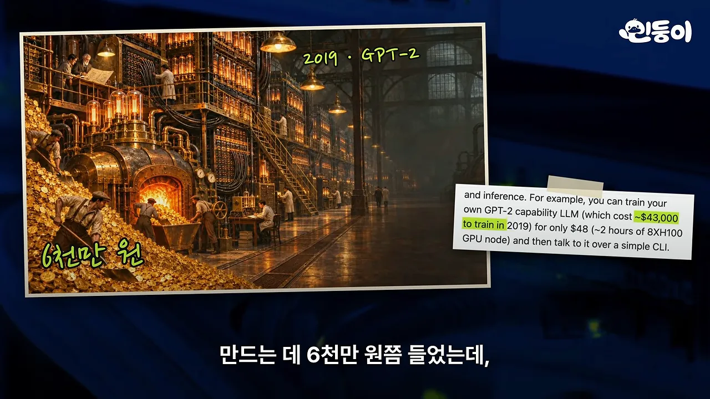
쓰는 법도 단순해요. speedrun.sh 스크립트 하나를 돌리면 데이터 준비부터 학습까지 끝나요. 다 만든 뒤에는 그 모델과 바로 대화해 볼 수 있어요.
colibri와 FreeToken — 큰 모델을 내 컴퓨터에 들이는 두 방법
두 엔진은 목표가 같아요. 원래 서버가 있어야 돌아가는 큰 모델을 개인 컴퓨터에서 돌리는 거예요. 다른 점은 모델의 어느 부분을 어디에 두느냐예요. 영상 설명을 한 그림에 모으면 이래요.
colibri는 파라미터 7,440억 개짜리 모델을 램 25GB 노트북에서 돌려요. 아래 README 화면에서 연두색으로 칠한 곳이 핵심이에요. GLM-5.2라는 744B 파라미터 모델이고, 처음 시작한 기계가 램 25GB의 12코어 노트북이라고 적혀 있어요. 모델을 통째로 메모리에 올리지 않고 그때그때 필요한 부분만 SSD(Solid State Drive)에서 꺼내 써요.
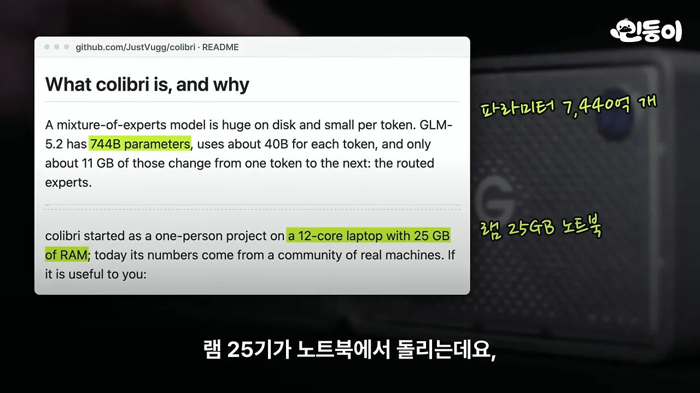
대신 느려요. 만든 사람은 이 속도를 README에 그대로 적었어요. 아래 목록 마지막 줄의 '처음 시작한 25GB 노트북: 0.05~0.1 tok/s'가 그 숫자이고, 글자 하나에 10~20초가 걸린다는 뜻이에요. 같은 목록 위쪽에는 지포스 5090 그래픽카드 여섯 장에서 초당 5.8~6.8토큰이 나온 기록도 있어요. README는 이 모델을 '벌새 먹이(램 25GB)로 살려 둔 7,440억 개짜리 거인'이라고 불러요. 이탈리아 개발자 한 명이 만들었고, 작은 모델은 일반 게이밍 PC(Personal Computer)에서도 충분히 빠르게 돈다고 해요.
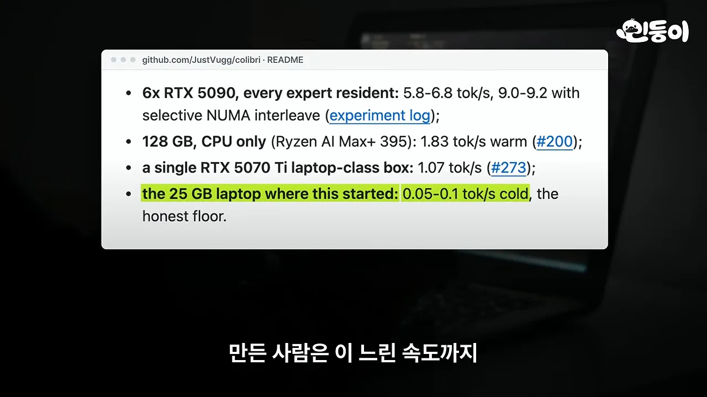
FreeToken은 버클리 연구진이 만든 엔진이에요. 모델에서 자주 쓰는 부분만 그래픽카드에 올려 둬요. 아래 논문 화면 오른쪽 막대그래프에서 맨 왼쪽 파란 막대(39.3)가 FreeToken이에요. 그래픽카드 메모리 8GB인 지포스 4060 게이밍 노트북에서 35B 모델을 초당 39.3토큰으로 돌렸어요. 클라우드로 도는 코덱스의 중간 속도(초당 33토큰)를 넘었어요. 기존 대표 도구(llama.cpp)보다 첫 답도 다섯 배 빨리 나온다고 해요.
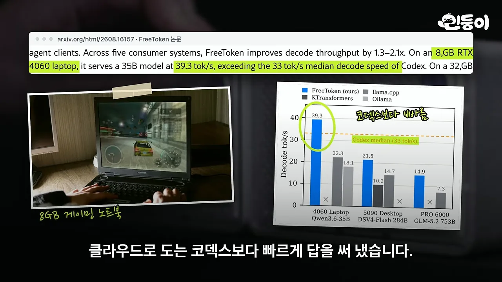
명령 한 줄로 클로드 코드나 코덱스에 붙일 수 있어요. 아래 화면의 ft launch claude가 그 명령이고, 뒤에 붙은 주석에 연결할 수 있는 도구 이름이 나열돼 있어요. 다만 리눅스와 엔비디아 그래픽카드에서만 돌아가요.
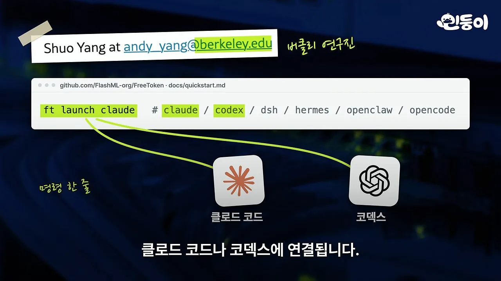
claude 자리를 codex로 바꾸면 코덱스에 연결돼요. 영상 03:03에서 보기코딩 AI 옆에 두는 도구
두 도구 모두 클로드 코드 같은 코딩 AI를 '더 많이, 더 넓게' 쓰게 해 줘요. Worktrunk는 AI를 여러 개 동시에 돌리게 하고, agent-desktop은 AI가 터미널 밖의 앱까지 다루게 해요.
Worktrunk — AI마다 작업 폴더를 따로 줘요
AI 여러 개가 한 폴더에서 일하면 서로 고친 걸 덮어써요. Worktrunk는 AI마다 작업 폴더를 따로 만들어 주고, 일이 끝나면 한 번에 합쳐 줘요. 영상 설명을 전후로 그리면 이래요.
명령 한 줄이면 새 폴더를 만들고 클로드 코드까지 띄워요. 아래 화면은 터미널 창 세 개에서 클로드 코드가 각각 다른 폴더(~/w/acme.api, acme.billing, acme.alpha)를 맡아 돌아가는 모습이에요.
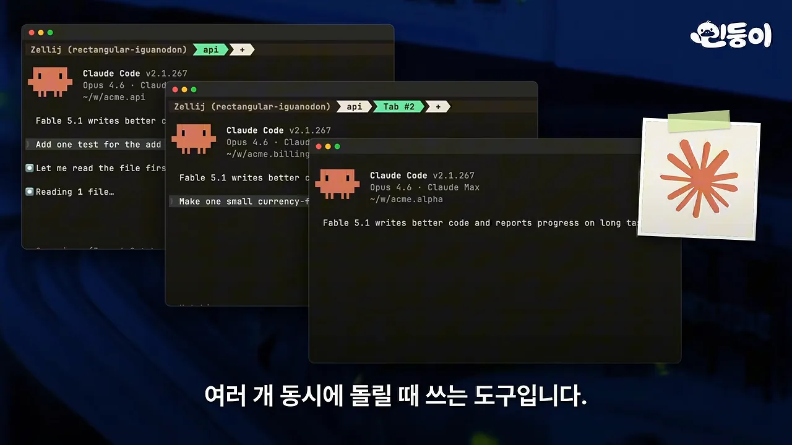
wt list를 치면 어느 AI가 일하는 중이고 어느 AI가 내 답을 기다리는지 목록으로 보여 줘요. 아래 화면 맨 아래 범례처럼 로봇 아이콘은 일하는 중, 말풍선 아이콘은 내 답을 기다리는 중이에요. 써 본 사람들은 일하는 방식이 180도 바뀌었다고 한대요.
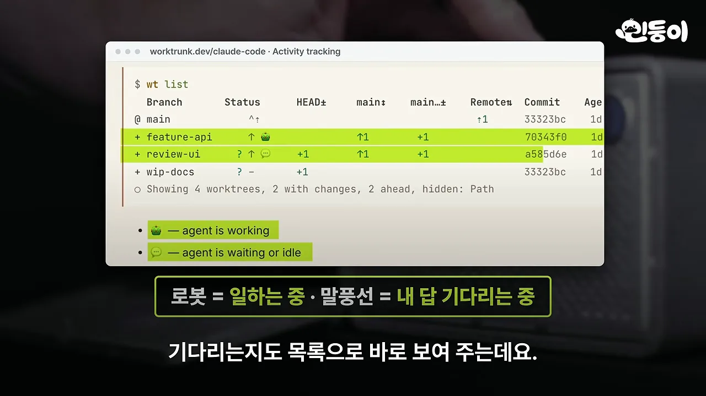
agent-desktop — AI가 내 앱을 직접 눌러요
그날 1위예요. 별이 1만 1천 개인데 그날 하루에만 2천 개 넘게 붙었어요. 클로드 코드에 "메모 앱 열어서 이거 적어 줘"라고 하면 AI가 앱을 열고 버튼을 누르고 글자를 쳐요. 아래 화면 왼쪽 위의 --agent-id a1 click "Zoom In" 같은 줄이 AI가 내리는 명령이에요. 오른쪽의 큰 마우스 커서는 그대로 있어요.
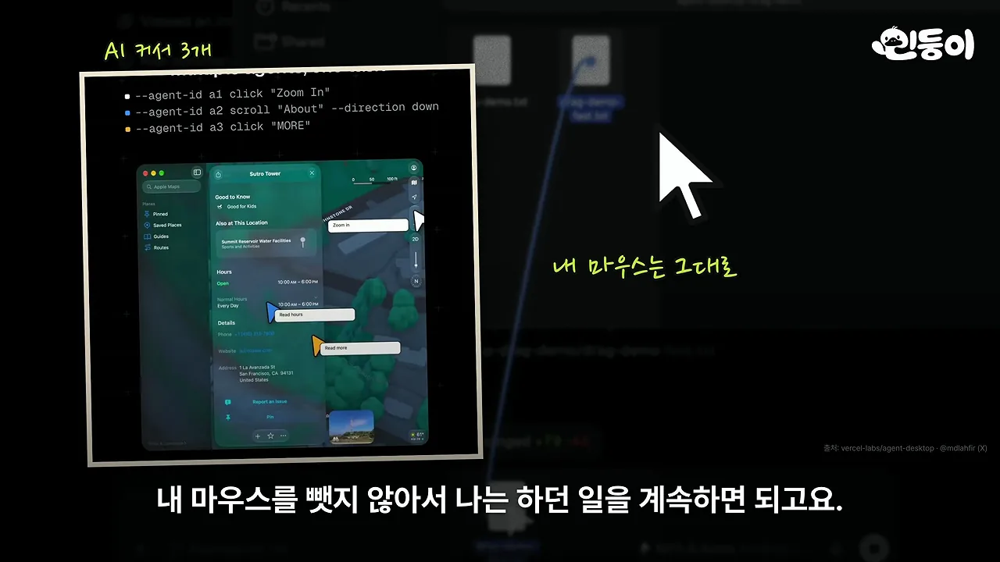
개발자 한 명이 혼자 만들다가 지난주 버셀(Vercel) 공식 프로젝트가 됐어요. 아래 README에서 연두색으로 칠한 곳처럼 맥, 윈도우, 리눅스에서 다 돼요. 첫 줄의 설명은 'OS(Operating System) 접근성 트리로 데스크톱 앱을 읽고 조작한다'예요.
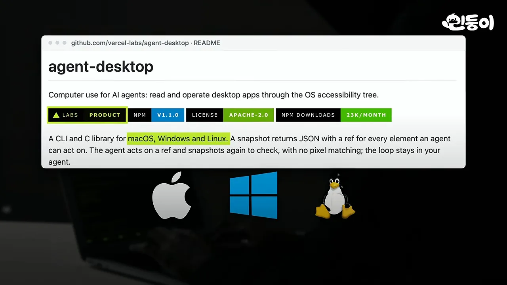
주가 예측, 화면 꾸미기, 크롤러
남은 셋은 성격이 제각각이에요. 주가를 예측하는 AI, 리눅스 화면 꾸미기, 웹 크롤러예요. 그중 둘은 영상이 '조심할 점'을 함께 짚었어요.
Kronos — 논문은 있지만 매매용은 아니에요
Kronos는 주식 차트만 보고 다음 움직임을 예측하는 AI예요. 거래소 45곳의 차트를 학습했고, 칭화대 연구진이 논문으로 냈다고 해요. 아래 README 그래프에서 파란 선이 실제 가격(Ground Truth), 빨간 선이 AI 예측(Prediction)이에요. 오른쪽 끝 동그라미 친 구간이 예측 부분이에요.
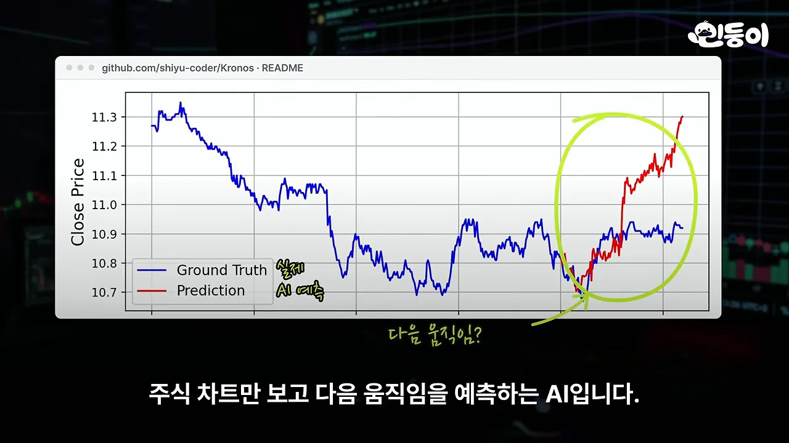
직접 돌려 본 사람들 결과는 달랐어요. 애플 주가로 1,800번 예측해 봤더니 '내일도 오늘과 같다'고 찍는 것보다 못했어요. 아래 표가 그 비교예요. 평균 오차율(MAPE(Mean Absolute Percentage Error))이 Kronos 1.6493%, '내일 = 오늘' 방식 1.3771%라 Kronos가 19.77% 더 나빴어요.
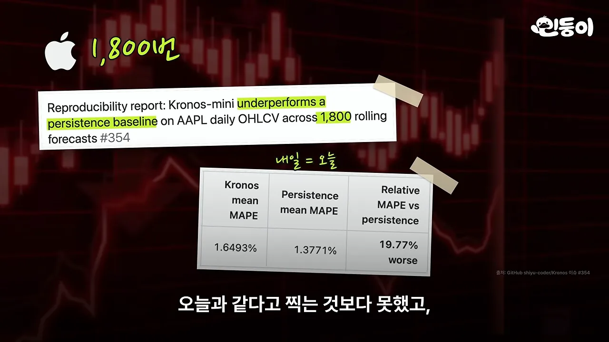
깃허브에는 방향 맞히기가 '동전 던지기 수준'이라는 다른 테스트 결과도 있어요. 만든 쪽도 README에 실전 매매용이 아니라고 적어 놨어요. 아래 화면 Disclaimer 문단의 연두색 부분이 '실전용 퀀트 매매 시스템이 아니다'라는 문장이에요.
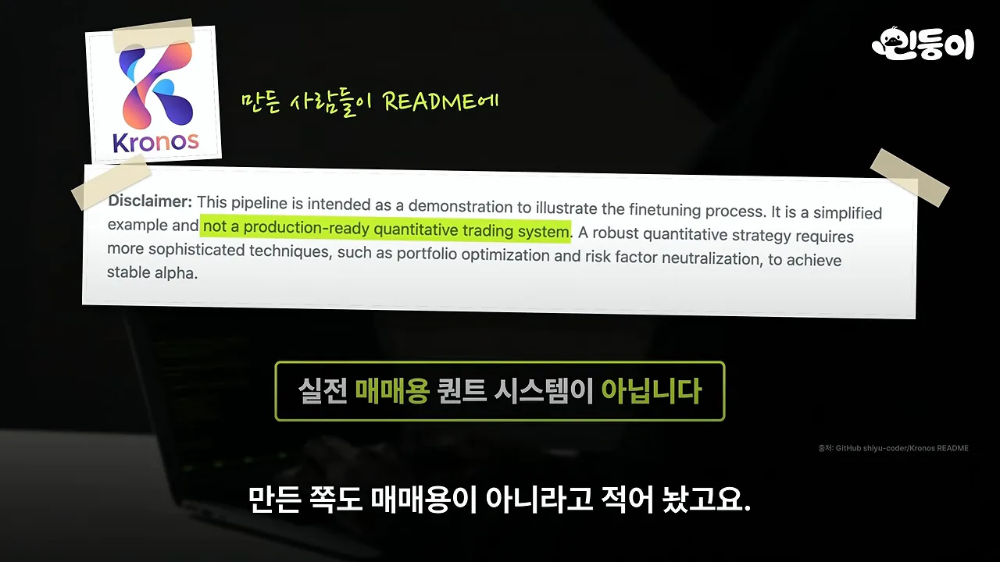
Hyprland — 리눅스 화면을 타일처럼 꾸며요
Hyprland는 리눅스 화면을 예쁘게 꾸며 주는 프로그램이에요. 창이 겹치지 않게 타일처럼 자동으로 배치되고, 열고 닫을 때의 애니메이션이나 반투명 효과까지 마음대로 바꿀 수 있어요. 아래 화면에서 파일 창 뒤로 별이 흐르는 배경이 비쳐 보이는 게 반투명 효과예요. 지난주 업데이트에서는 창을 끌면 젤리처럼 출렁이는 효과가 들어갔어요.
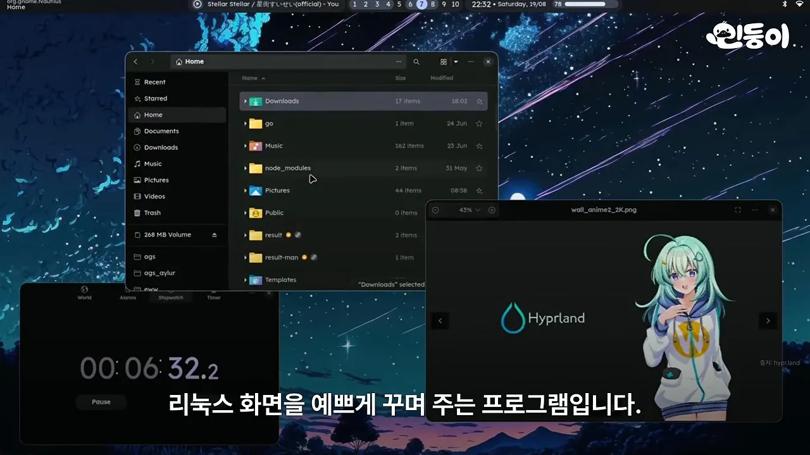
Scrapling — 사이트가 바뀌어도 다시 찾아내요
Scrapling은 웹사이트에서 데이터를 자동으로 긁어 오는 파이썬 도구예요. 아래 README 상단 배지에 'GitHub Trending #1 Repository Of The Day'가 붙어 있고, 연두색 부분이 'Python Web Scraping framework'라는 소개예요. 보통 이런 도구는 사이트 디자인이 조금만 바뀌어도 고장 나요. Scrapling은 바뀐 페이지에서 원래 찾던 내용을 스스로 다시 찾아내요.
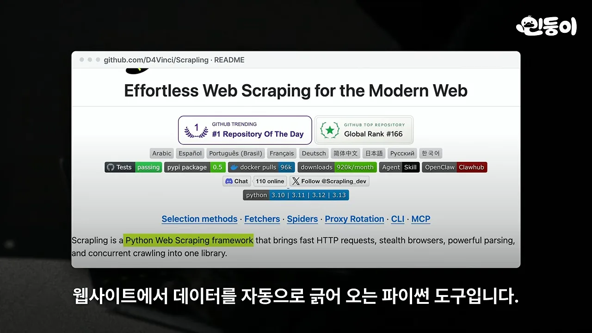
논란이 된 건 봇 차단까지 통과한다는 점이에요. 사람인지 확인하는 Cloudflare 검사까지 뚫었어요. 아래 화면의 'Success!' 체크 표시가 그 검사를 통과한 모습이에요. 한 업계 분석가는 할 수 있다고 해서 허락받은 건 아니라고 짚었어요.
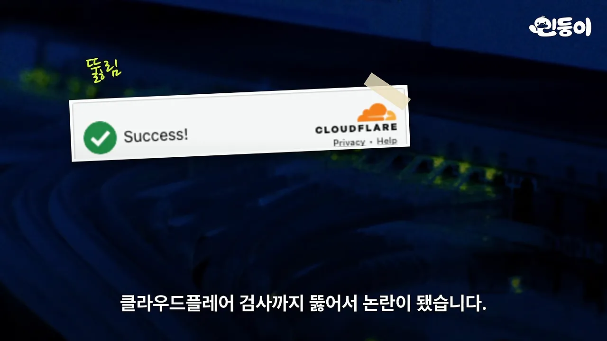